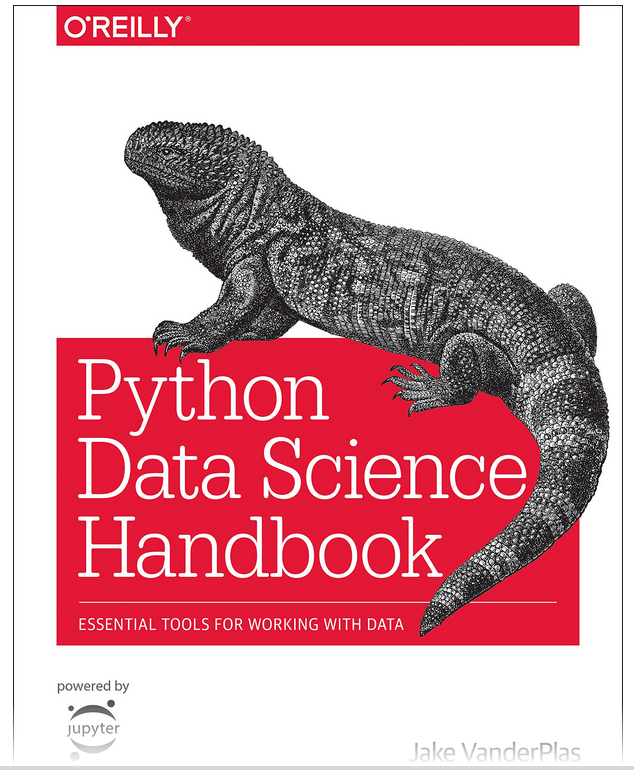
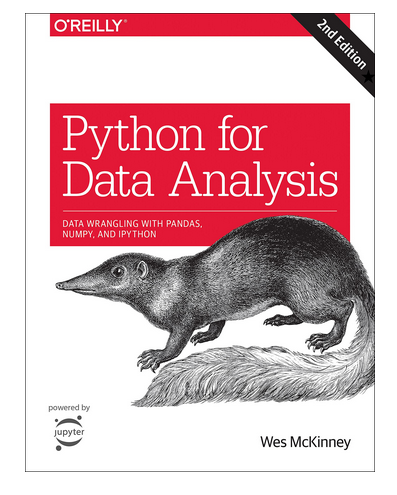

Further Reading#
This section lists some of the books that have been used as a source of material and ideas for this course.
Python Data Science Handbook#
Provides a good overview of many of the most useful libraries for doing data science with python. In particular, it has comprehensive sections on numpy and pandas. It also examines a number of popular techniques in machine learning with an emphasis on using scikit-learn.

Title : Python Data Science Handbook: Tools and Techniques for Developers: Essential Tools for Working with Data
Author : Jake VanderPlas
Publisher : O’Reilly Media; 1st edition (25 Mar. 2016)
Language : English
Paperback : 300 pages
ISBN-10 : 1491912057
ISBN-13 : 978-1491912058
Python for Data Analysis#
Good introduction to the python language. A wide range of techniques for data cleansing and preprocessing are introduced. Includes NumPy and Pandas.

Title : Python for Data Analysis: Data Wrangling with Pandas, NumPy, and IPython
Author : Wes McKinney
Publisher : O’Reilly Media
Language : English
ISBN-13 : 978-1491957660